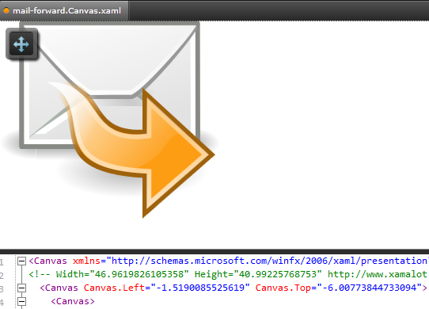
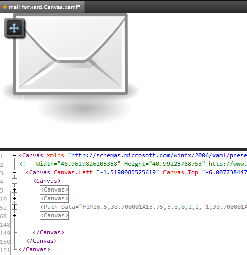
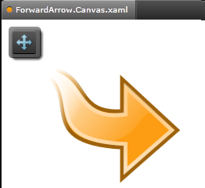
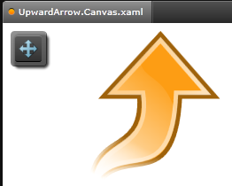
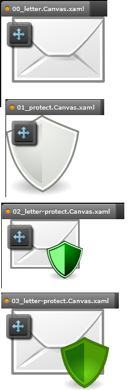

Introduction
I found vector graphics in the Extensible Application Markup Language (XAML) and determined that it is quit useful to produce icons based
on vector graphics since these vector graphics contain nice gradiants and other scalable items that look nice in all sorts of resolutions.
Clearly, vector graphics do not replace a graphics designer and producing nice 16x16 pixels icons may still require manual work. But scalable graphics can produce impressive results beyond that size (eg.: 32x32 or 256x256 pixels).
There are many vector graphics formats. But the two most popular formats that can be used for icons these days are:
- Extensible Application Markup Language (XAML)
- Scalable Vector Graphic (SVG)
Please review the References section for more details on open source tools that support these technologies.
I was interested in finding a way for constructing an icon set from XAML based icons. Therefore, I have downloaded a sample project and wrapped a command
line tool around it [2]. The result is nothing too fancy or novel but simply a command line tool that can be used to convert XAML into any PNG size of bitmap files. This tool can, among other things, be part of a build process and generate localized images based on a language/culture preference.
To prove the concept I have added two sample data projects (one originating from SVG) and discovered a cool SVG editor called InkScape on the way [3].
"Why doing this conversion when WPF supports XAML natively?" you may ask. Well the answer is simple once you have tried to put a number
of XAML based images (say 40) into their corresponding containers (say we use 40 XAML based images in 40 toolbar buttons), because you will find that
rendering will take a lot longer and your applications response time will slow down considerably. Thats because vector graphics consume a lot more resources
for their rendering than pixel based graphics do. We can of course use vector graphics in our WPF applications but this direct usage should be limited.
So, while we can savely introduce vector graphics as a base of our images (icons) it is still some way to go before we can use vector graphics within our actual run-time code.
How to convert XAML to PNG with the Sample Data
Download the XAMLtoPNG.zip file and store it in a dedicated folder. Create a new sub-folder named Data
in that dedicated folder and download the sample data zip files attached to this article:
- OpenIconLibrary.zip
- TangoProject.zip
into that folder. Now, uncompress each zip file into their sub-directory such that the contents are stored in a seperated sub-folder.
Your folder structure should look something like this:
- XAMLtoPNG
+- XAMLtoPNG
+- Properties
- Data
+- TangoProject
+- PNG
+- XAML
+- OpenIconLibrary
+- PNG
+- XAML
Browse into the XAMLtoPNG Visual Studio 2010 project file and compile the project with Rebuild All.
Make sure there is at least a Debug version of the executable, because you can use this version if you use Windows Explorer
to browse into the OpenIconLibrary or TangoProject directory. Review and Execute the Convert.bat file
in each directory.
This should be all that is required to test drive the conversion from XAML to PNG. Inspect the PNG sub-folders to view the results.
Using the code
The code of the XMLtoPNG tool is rather small and Laurent Bugnion [2] already explains why he uses STA (single threaded apartment) in his source code. I could, of course, have removed this and could have easily made the complete command line tool be STA threaded using the appropriate [STAThread] property in the Program class. But I thought it would be more interesting to leave things as they are and add some features instead. So, I added a command line parser in the Params class with the ability to Zoom and resize the PNG image in the output file.
You can use the -XDPI and -YDPI switches to zoom in and out of an image. The default size for these values is 96 DPIs and works OK for many images that I have tried.
You can also use the -XSize and -YSize parameters to define the pixel size of the resulting PNG file being written as the result of the conversion process.
The -ScaleMode can be either Target or Original. It determines whether a graphic should be scalled based on the intended output size in pixels or based on the input using only DPIs as a zoom factor. In my experience I am using only the default -ScaleMode Target and get along quit nicely with that. But I left this open for everyone to pick their favourite.
Last, but not least, there are -Input and -Output parameters which determine the XAML input and the location of the PNG output. The -Input parameter can point to a single XAML file or to a directory containing XAML files. And the same can be true for the -Output parameter (refer to the sample Convert.bat files for more details).
This way, we can either convert a complete directory of XAML files into PNG files or convert single files. The ouput PNG file is output at the same location as the XAML file if the output parameter is not supplied.
The minimal required parameter is the -Input parameter pointing to an XAML input file.
IMPORTANT NOTICE
Use the XAMLtoPNG command line tool only to generate files in a location where temporary files are stored because the tool will overwrite existing PNG files without any further questions. The program is safe to use but I do not want anyone to loose their precious PNG files. So, just keep the icon sets that you generate with the tool in a
separate folder and everything should be fine.
How the code works
So, how does the conversion work under the hood? First, of all, there is
either a Params object being constructed out of the command
line parameters or there is an error being indicated in the main entry
point of the Program class:
string strError;
Params progArgs;
int iRet = Params.ParseCmdLine(args, out progArgs, out strError);
if (iRet != 0)
{
Console.WriteLine(strError);
return iRet;
}
if (progArgs.InputFiles.Count == 0)
{
Console.WriteLine("No XAML files found for conversion.");
return 0;
}
The progArgs object contains a file input progArgs.InputFiles
and a file output progArgs.OutputFiles property which represent collections
of (string) path references to files. This collection is iterated upon to convert each
input file in each loop.
for (int i = 0; i < progArgs.InputFiles.Count; i++)
{
string inputFile = progArgs.InputFiles[i];
string outputFile = progArgs.OutputFiles[i];
try
{
using (Stream stream = File.OpenRead(inputFile))
{
using (Stream streamOut = File.OpenWrite(outputFile))
{
XamlToPngConverter converter = new XamlToPngConverter();
converter.Convert(stream, progArgs.XSize, progArgs.YSize,
progArgs.XDPI, progArgs.YDPI, progArgs.ThisScale, streamOut);
streamOut.Close();
}
}
}
catch (Exception ex)
{
Console.WriteLine("Error converting:");
Console.WriteLine(inputFile);
Console.WriteLine("into:");
Console.WriteLine(outputFile + "\n");
Console.WriteLine(ex.ToString());
}
}
The progArgs.XSize, progArgs.YSize, progArgs.XDPI, progArgs.YDPI, progArgs.ThisScale
parameters in the above main loop are either the default value set in the constructor of the
Params class or the value supplied via command line as described above.
Now looking into the Convert method of the XamlToPngConverter class
we can see that a new Thread object named pngCreationThread is being created:
Thread pngCreationThread = new Thread((ThreadStart) delegate()
This Thread is executed as Single Threaded Apartment (STA) because WPF requires this
when rendering is executed. The Start statement starts the thread in the background and
the Join statement dis-continues the calling thread until the background thread is finished.
pngCreationThread.IsBackground = true;
pngCreationThread.SetApartmentState(ApartmentState.STA);
pngCreationThread.Start();
pngCreationThread.Join();
Now, lets have a look at what the background thread does. Reading the XAML is just one line:
element = XamlReader.Load(xamlInput) as FrameworkElement;
where the FrameworkElement class is a System.Windows.FrameworkElement which is
the base of a lot of controls (Page, Image, Panel) in WPF:
http://msdn.microsoft.com/en-us/library/system.windows.frameworkelement.aspx#inheritanceContinued
This is why we require that the input XAML must contain one of these control classes
(or an inherited class) as the XAML root tag. I have used the Canvas class
in the sample data projects above as a root tag. And it works with that because the
Canvas class inherits from the Panel class.
The conversion itself is implemented with the following statements:
Size renderingSize = new Size(width, height);
element.Measure(renderingSize);
Rect renderingRectangle = new Rect(renderingSize);
element.Arrange(renderingRectangle);
BitmapSource xamlBitmap = RenderToBitmap(element, width, height, dpiX, dpiY, thisScale);
PngBitmapEncoder enc = new PngBitmapEncoder();
enc.Frames.Add(BitmapFrame.Create(xamlBitmap));
enc.Save(pngOutput);
The size of the input element (and thus the output) is set in the call to the
Arrange method of the FrameworkElement.
The RenderToBitmap method returns a BitmapSource object
which is added as a frame into the the PngBitmapEncoder object.
The PngBitmapEncoder object is then saved as PNG output file.
The RenderToBitmap method is essentially the core of the business where
the output bitmap gets rendered. It size can either be based on the original size of
the input (this may be larger or smaller than the input) or be based on the output
(this works like a vertical and horizontal stretch with 96 DPIs).
switch (thisScale)
{
case ScaleTO.OriginalSize:
bounds = VisualTreeHelper.GetDescendantBounds(target);
break;
case ScaleTO.TargetSize:
bounds = new Rect(0, 0, width,height);
break;
default:
throw new ArgumentException(string.Format("The scaling mode: {0} is not supported.", thisScale.ToString()));
}
How the XAML works
The previous sections has put some light on the issue of how the C# code
(mostly written by Laurent Bugnion) [2] works. In this section I would like
to give some hints on how the XAML can be used to design icons without
much effort but a descent look.
Please download and uncompress the XAMLToPNG Sample.zip file
to follow this small tutorial. The XAML files contained in this zip file
where downloaded from from XAMLALOT [4] (see URL comment in XAML to find
the source). Each outter convas tag from XAMLALOT has a width and height
property which I have removed since I wanted to scale the images any way
I would like. I have used KAXAML [1] to edit the XAML code that I have
downloaded but you could also use any XML editor.
Lets have a look at the 01_mail forward sub-directory
to get started. Lets open the mail-forward.Canvas.XAML
file.

The symbol in this file consists of a mail letter and an arrow. Now each
object in this XAML file is stored in a canvas or path tag. So, by simply
removing tags we can use KAXAML to remove elements from the original file.
We can, for example, remove the canvas tag between the lines [148 - 193]
and end up with a nice mail symbold that has no arrow (I forgot to remove the shadow of the arrow here - do not forget that when you do it).

This is how I extracted the arrow in the ForwardArrow.Canvas.xaml file.

...and I also used a render transform statement in the
ForwardArrow.Canvas.xaml file to have that arrow point upwards,
which could be used for a symbol that might denote an upload or start-up process...

The letter symbol in the 00_letter.Canvas.xaml was created in a similar
way. I Extract the letter symbol from the mail-forward.Canvas.XAML file
discussed above.
The protect symbol in the 01_protect.Canvas.xaml file was extracted from
the network-wireless-encrypted.Canvas.xaml file.
|

|
And last but not least, the content of both files 00_letter.Canvas.xaml
and 01_protect.Canvas.xaml was moved into one final file
03_letter-protect.Canvas.xaml. In which I also colored the protect
symbol green (denoting something like a protected Email - whatever that could be).
The green color gradient of the final image was stollen from the XAML
file in the 00_Go up sub-directory. It is a good practice of mine to
copy colors from other files in the same icon set because this makes it more likely
that the result is pleasantly consistent with the rest of the icon set.
|
More Resources
The abundance of SVG and XAML resources on the Internet is amazing. There are a few nice icon sets from various Linux destributions [4] or other efforts that make the usage of nice icons a common thing even for home grown past time developed software.
Any of these sources can be used as a starting point. A vector editor listed in [1] or [3] can be used to edit XAML or SVG images.
Convert SVG to XAML
SVG images can be converted with 'SharpVectors - SVG# Reloaded' [3] into XAML (see the OpenIconLibrary.zip
Readme.txt file for details). Getting a canvas based XAML requires some Search and Replace, using, for example, Notepad++.
But another tool that works without additional hazle is XAMLTune [3]. I downloaded it and was able to convert the original tango project SVG files into XAML that can directly be loaded into KAXAML. Here is a small guide to convert SVG to XAML using XAMLTune:
You can even use the Visual Studio 2010 Express designer to edit XAML images and I guess that I am telling nothing new when I say that there is a considerable range of commercial products if you need to spend some money (Expression Blend, Photoshop etc..).
Dive into it and let me know how this works for you. I find it very pleasant to edit vectors and design icons based on these whether the origin from SVG or XAML does not matter to me at all.
Points of Interest
A XAML to PNG conversion tool, as the one posted in this articel, might be interesting, because it may ease other people into using vector graphics
as a base of their icon art instead of using only bitmap images. More to the point, this conversion process could be part of a build process, if there is any need for that.
And this ability in turn could enable whole new ways of doing graphics designs in the future.
References
History
- 16.07.2012 - Posted first version of the article.
- 17.07.2012 - Cleaned up minor problems code and extended article
- 30.07.2012 - Added small sub-section on converting SVG to XAML